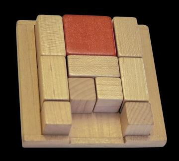
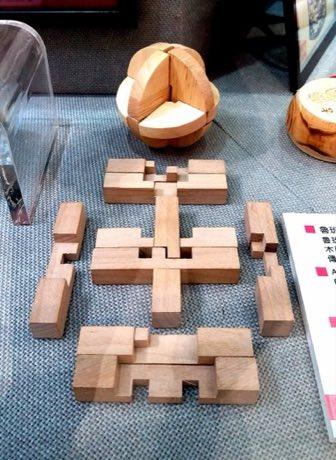
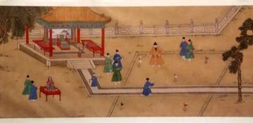
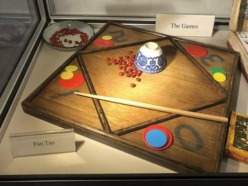
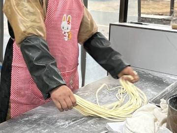
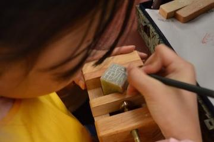

River Valleys and First Cities 2


Classical Worlds 8

Cuju
China · Dexterity and skill games

Dougong Bracket Stacking
China +2 · Puzzles and mind games


Tea Horse Road Caravan
China · Board and table games
Crossroads and Golden Ages 13

Banqi
China +1 · Board and table games


Erhu Two-String Fiddle
China · Musical instrumentsPlay preview · in the Lutes & Fiddles of the World app
Luzhanqi
China · Board and table games

Pai gow
China · Board and table gamesTien gow
China · Board and table games
Age of Contact and Craft 2

Stone Arch Bridge Builder
China · Puzzles and mind games
Modern Heritage 11




Luban lock
China · Puzzles and mind games


Living Traditions 22

Bamboo scaffold builder
China · Crafts and making

Cheongsam Tailor Shop
China · Crafts and making


Chuiwan
China · Other traditions
Cloisonne
China · Crafts and making
Dumpling Pleating
China +2 · Crafts and making
Fan-tan
China · Other traditions
Hmong story cloth
China +3 · Crafts and making
Hong Kong Milk Tea Pulling
China · Crafts and making
Lamian
China · Crafts and making
Neon sign bender
China · Crafts and making
Oil-paper umbrella making
China · Crafts and making
Peranakan beaded slippers
China +1 · Crafts and making
Seal carving
China · Crafts and making

Chengdu silver filigree
China · Crafts and makingPlay preview · in the Jewels & Glass of the World appMaonan flower bamboo hat
China · Crafts and makingPlay preview · in the Mats & Wicker of the World app